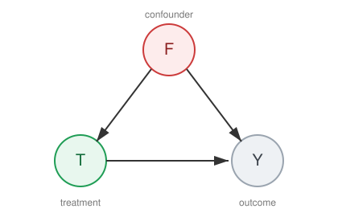

Biases and De-Biasing Toolkit#
In Assumptions we established the four assumptions — Assumption 1, Assumption 2, Assumption 3, and Assumption 4 — that allow causal effects to be identified from observational data. In Graphical Causal Models we introduced DAGs as the language for encoding and reasoning about these assumptions. In practice, assumptions are rarely perfectly satisfied. This chapter is a practical guide for the actuary: how to diagnose what went wrong, how to fix it, and how to ensure the resulting model is fair.
What went wrong? — From Assumption Violations to Biases#
When a causal assumption is violated, a specific bias enters the treatment effect estimate. The table below maps each assumption to the bias it produces and the diagnostic pattern visible in data.
Violated Assumption |
Bias |
Diagnostic Pattern |
|---|---|---|
Confounding |
Effect estimate changes when adjusting for additional covariates |
|
Assumption 4 (population) |
Selection bias |
Sample composition differs systematically from target population |
Incorrect adjustment |
Collider bias |
Conditioning on a post-treatment variable creates an association |
Extreme weights |
Propensity scores cluster near 0 or 1; IPW estimates are unstable |
|
Interference |
Control outcomes correlate with treatment intensity in neighbouring units |
|
Treatment ambiguity |
Effect estimates vary when stratifying by treatment sub-type |
The remainder of this section defines each bias precisely.
Confounding Bias#
Definition 18 (Confounding Bias)
Confounding bias occurs when a fork variable \(F\) causally influences both the treatment \(T\) and the outcome \(Y\), and the analysis fails to adjust for \(F\).
{kind=link}

Fig. 20 Confounding: the fork variable \(F\) influences both treatment \(T\) and outcome \(Y\), biasing the naive \(T\)–\(Y\) comparison unless adjusted for.#
Confounding violates Assumption 4. The naive comparison conflates the causal effect with a baseline difference between groups:
In insurance, confounding arises when healthier policyholders self-select into wellness programmes, making the programme appear more effective than it is.
Selection Bias#
Definition 19 (Selection Bias)
Selection bias arises when the sample analysed is not representative of the target population, because selection into the sample depends on variables related to both \(T\) and \(Y\).
Selection bias can occur at study entry (differential enrolment), during follow-up (differential attrition), or through post-treatment conditioning. It violates Assumption 4 at the population level. In insurance, survivorship bias in long-term policy data is a common example: only policies that were not cancelled are observed.
Collider Bias#
Definition 20 (Collider Bias)
Collider bias (Berkson’s paradox) occurs when the analysis conditions on a collider \(C\) — a common effect of \(T\) and \(Y\). Conditioning on \(C\) opens a non-causal path between \(T\) and \(Y\).

Fig. 21 Collider bias: \(C\) is a common effect of \(T\) and \(Y\). Conditioning on \(C\) opens a non-causal path between treatment and outcome.#
Collider bias results from incorrect adjustment, not from a violated assumption per se. In insurance, analysing claims conditional on whether a claim was filed can introduce collider bias, since filing depends on both the treatment and the outcome severity. DAG-guided variable selection (Criterion 1) is the primary safeguard.
Positivity Violations#
When Assumption 3 is violated, propensity score weights \(w = 1/\hat{\pi}(x)\) become extreme, leading to high-variance, unstable estimates. In insurance, positivity fails when certain policyholder profiles are always or never eligible for a programme — e.g. a discount that is automatically applied above a certain age.
Interference#
When Assumption 2 is violated because one unit’s treatment affects another’s outcome, the standard individual-level estimators are biased. In insurance, this arises when offering a group discount changes behaviour across all members of a household or employer group.
How to fix it — The De-biasing Toolkit#
The biases above are not merely theoretical concerns — they are practical obstacles that the actuary must address. The following table organises the available de-biasing strategies by what you do, maps each to the bias it addresses, and links to the estimation methods covered in later chapters.
Strategy |
Addresses |
Covered in |
|---|---|---|
Adjust (regression, propensity scores, doubly robust) |
Confounding, selection |
|
Reweight (IPW, IPCW, overlap weighting) |
Confounding, selection, positivity |
|
Restrict (trimming, redefine target population) |
Positivity violations |
|
Model the causal structure (DAG-guided variable selection) |
Collider bias, confounding |
|
Cluster or network models |
Interference / spillover |
— |
Sensitivity analysis |
Unobserved confounding |
Adjust#
Include confounders \(F\) as covariates in the outcome model (Wooldridge, 2012), or use propensity score methods — matching, stratification, or inverse-probability weighting on \(\pi(x) = P(T{=}1 \mid X{=}x)\) (Rosenbaum & Rubin, 1983; Austin, 2011). Doubly robust estimators combine both approaches and are consistent if either the outcome model or the propensity model is correctly specified. When unmeasured confounders exist, instrumental variables can identify the causal effect using exogenous variation (Angrist & Pischke, 2015).
Reweight#
Inverse-probability weighting (IPW) creates a pseudo-population in which treatment is independent of confounders. Inverse-probability-of-censoring weighting (IPCW) extends this idea to correct for selection bias due to attrition or censoring. Stabilised weights \(w^{s} = P(T{=}t) / P(T{=}t \mid X)\) reduce variance (Austin, 2011). Overlap weighting — with weights proportional to \(\pi(x)(1-\pi(x))\) — naturally down-weights units in regions of poor overlap and is particularly useful when positivity is borderline.
Restrict#
When certain covariate strata have near-deterministic treatment assignment, the estimand itself may need to change. Trimming removes units with \(\hat{\pi}(x) < \varepsilon\) or \(\hat{\pi}(x) > 1 - \varepsilon\) (e.g. \(\varepsilon = 0.05\)), targeting a trimmed population ATE. Alternatively, redefine the target population to the overlap population where both treatment and control are plausible.
Model the causal structure#
Use a DAG to distinguish confounders (adjust for them) from colliders (do not condition on them) and mediators (condition only if interested in direct effects). The Criterion 1 and frontdoor-criterion from Graphical Causal Models provide algorithmic tools for selecting the correct adjustment set.
Cluster or network models#
When interference is present, assign treatment at the group level and analyse at the cluster level. Partial interference models assume spillover occurs only within known clusters (e.g. households, employer groups). Spatial or network models explicitly model the dependence structure.
Sensitivity analysis#
Assumption 4 cannot be verified from data alone. Sensitivity analysis quantifies how strong an unmeasured confounder would need to be to explain away the estimated effect. Methods include E-values, Rosenbaum bounds, and partial \(R^2\) sensitivity — covered in detail in Validation and Sensitivity Analysis.